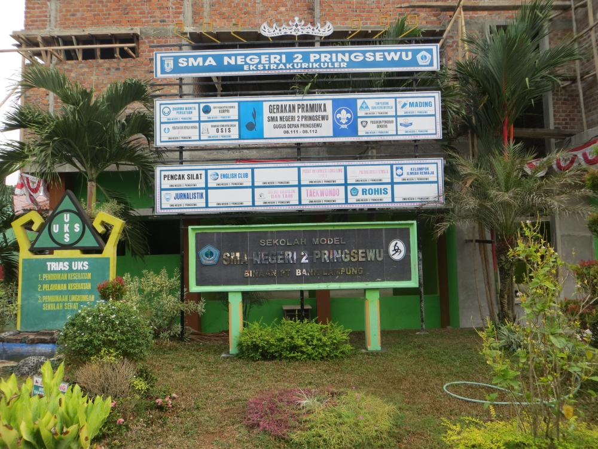

EDUCATION
SMA Negeri 2 Pringsewu
2017-2020

Sekolah Menengah Atas Negeri 2 Pringsewu atau dikenal juga dengan nama SMANDA, adalah salah satu SMA Negeri di Kabupaten Pringsewu. SMA ini berada di Jalan Mekarsari No 288 Podosari Kecamatan Pringsewu, Kabupaten Pringsewu, Lampung
Universitas Teknokrat Indonesia
2020-sekarang
Universitas Teknokrat Indonesia merupakan salah satu perguruan tinggi swasta di Bandar Lampung, Lampung yang berdiri pada bulan Februari 1986 dengan nama awal "Kursus dan Bimbingan Teknokrat". Perguruan Tinggi ini dikelola oleh Yayasan Pendidikan Teknokrat. Alamat: Jl. ZA. Pagar Alam No.9 -11, Labuhan Ratu, Kec. Kedaton, Kota Bandar Lampung, Lampung 35132